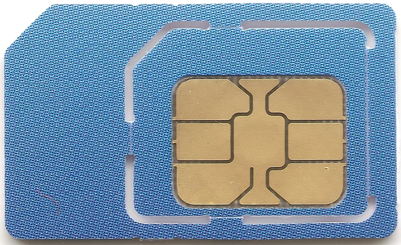
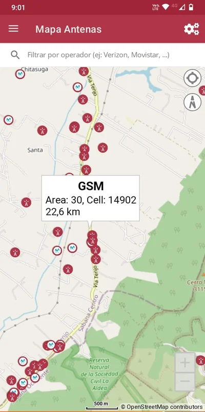
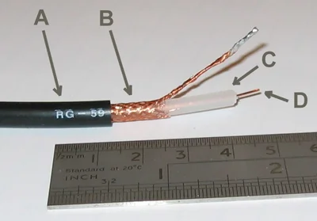

Descubre la antena que más te conviene.
Comprar una antena para tener mejor calidad de señal de Internet móvil
Bienvenida
Hola, soy Sanjay. Junto a Gabriel, otro amigo cacharrero, hicimos la primera compra de una antena 3/4G, después de investigar sobre soluciones comerciales al problema de conectividad.
En esta solución te voy a ofrecer unas recomendaciones para poder comprar una antena 3/4G.
¿Qué es una antena 3G o 4G?
3G y 4G son abreviaciones para hablar del conjunto de tecnologías necesarias para la transmisión de voz y datos en la telefonía móvil.
Ese conjunto incluye, desde los tipos de celulares y antenas, a protocolos de comunicación entre ellas, que son necesarios para mandar voz o datos por la telefonía celular.
No voy a entrar a los detalles, pero, por curiosidad, vale la pena saber que la G significa generación y los números son la tercera y cuarta generación de estas tecnologías.
Las generaciones anteriores no permitían enviar datos, solo voz, como la radio. Entonces, por ejemplo, los celulares viejos -que en Colombia llamamos “flechas”- no sirven para recibir datos de Internet. Para poder conectarse a Internet los dispositivos necesitan ser celulares con tecnología de 3G, o superior, es decir, ser celulares inteligentes o smartphones.
¿Para qué sirve una antena 3/4G?
Hace poco entendí que la señal de Internet, que llega a los celulares, viaja por ondas electromagnéticas invisibles. Los celulares, tienen una antena pequeña en su interior, que captura esas ondas. Eso nos permite tener acceso a Internet.
Gabriel y yo hemos descubierto que comprar una antena comercial, 3G o 4G, es de las mejores soluciones para tener una conexión a Internet estable y confiable. Especialmente, en un lugar fijo como una casa, una escuela, una biblioteca o una tienda, haciendo uso de telefonía móvil en lugares donde la cobertura es baja.
Lo que la antena hace, sencillamente, es capturar y amplificar la señal de datos, específica del celular (3G ó 4G), que viene en ondas electromagnéticas, por el aire, desde un lugar más alto que en el que estas tú -por encima de árboles, edificaciones o colinas- y bajarla, por un cable, a tu altura.
Una vez en ese punto, la señal se puede compartir en ese espacio a través de generar una red WiFi, o por cable, usando un módem o enrutador. Sé que estos términos pueden parecer confusos, pero, a medida que avances por estas recomendaciones, tendrás más claridad sobre ellos.

Si quieres saber cómo puedes comprar una antena, y qué parámetros debes tener en cuenta para buscar y decidir la antena 3G/4G que mejorará tu conexión a Internet móvil, sigue nuestras recomendaciones.
Antes de empezar, un reflexión
A veces, decidimos comprar lo más barato porque preferimos ahorrar dinero en una compra. Como dicen por ahí, “lo barato sale caro” y para el caso de tecnología, como lo es una antena, esto tiende a ser cierto.
Hemos visto muchas antenas que se vuelven basura, no cumplen la función (como las de los proveedores de TV satelital), quedan instaladas en ciudades y zonas rurales, generando desecho tecnológico que, además de ser feo, nunca se retira o vuelve a usarse.
Es importante que tengas claro, también, cuáles son los cuidados y mantenimiento que tu compra te puede ocasionar. A veces compramos una cosa y, cuando hay que hacerle mantenimiento, no contamos con el tiempo o los recursos para afrontarlo y puede quedarse inservible. Cuando te pones de acuerdo con otros, puedes repartir el cuidado y distribuir los gastos, los hará más liviano y llevaderos.
Asegúrate de que, la antena que compres, te sirva para las condiciones de tu contexto y que sea la mejor opción para ti.
¿Qué necesitas?
- Reconocer la geografía del lugar donde necesitas señal.
- Identificar cuál es el operador u operadores que mejor funcionan en la región.
- Un proveedor de antenas.
- Algo de dinero.
- Reunirte con tu comunidad para identificar cuál es la mejor opción.
¿Cómo hacerlo?
A continuación te presentamos los 4 momentos de lo que nosotros consideramos para decir qué tipo de antena 3G/4G comprar.
-
Momento 1: ¿Cómo saber si necesito una antena 3/4G?
Existen lugares en los que la señal de telefonía celular es muy débil. Puedes confirmarlo en tu celular, en la barras de conexión: verás una sola barra o algo que dice H+, E o, incluso, que no hay señal.
Sin embargo, cuando te mueves, unos metros o unos pocos kilómetros, aparece o mejora la señal y empiezas a ver barras con el símbolo de 3G ó 4G, en tu celular.
Si este es tu caso, puede que haya torres de telefonía celular a tu alrededor, a las que no tienes visibilidad directa, y, por tanto, no estás pudiendo conectarte a la red de 3G/4G, desde el lugar inicial.
Comprar una antena 3G/4G te permitirá tener una conexión estable a Internet, pero debe haber cobertura de telefonía celular en la zona.
No es una solución económica, pero es la manera más confiable de establecer un punto de acceso a Internet para tu comunidad, si se encuentran en lugares con baja cobertura de telefonía móvil.
Si no hay cobertura de telefonía móvil, no vas a lograr conectividad con una de estas antenas. Para conseguirla, tendrás que recurrir a soluciones como las que describimos en la solución de ¿Cómo comprar un servicio de internet satelital para lugares no interconectados? en donde existen diversas soluciones satelitales, aunque tienden a ser más costosas.
-
Momento 2: De acuerdo con lo que necesitas, estas son las preguntas para hacerte
-
¿Dónde estoy ubicado geográficamente?
Lo primero es entender la geografía de dónde estás ubicado. Lo que estás intentando identificar son las torres de telefonía celular que podrían proveerte de señal. Para que las antenas 3/4G funcionen, generalmente, deben poder “verse” con una torre, o, por lo menos, deberían apuntar hacia el mismo lugar.
Si vives en una región con muchas montañas será un poco más difícil acceder a una buena señal, a diferencia de un lugar plano.
Si es posible, busca la torre de telefonía más cercana: busca torres altas con antenas. Normalmente, están ubicadas en las cumbres de las montañas más altas, para permitir mayor cobertura.
Si no sabes dónde queda la torre de telefonía celular más cercana puedes, también, preguntarle a los vecinos, quizá ellos ya la hayan identificado.


Tomado de Wikimedia Commons
- ¿Qué empresas proveedoras de telefonía móvil tienen cobertura en esta zona?
En lugares rurales, o apartados de centros urbanos, la cobertura de los operadores de telefonía móvil puede ser bastante regular.
Asegúrate de encontrar el que mejor funcione en la región. Pregúntale a tus vecinos cuál les va mejor. Identifica cuáles tienen mejor cobertura, es decir, que prestan un servicio más estable y veloz.
💡 Ten en cuenta que la cobertura de estos proveedores va cambiando en el tiempo, a medida que instalan nuevas antenas repetidoras o a medida que más gente se suscribe a sus servicios, saturando su señal.

Este dato es importante para el proveedor de la antena: asegúrate que el módem que te entregue cuente con las bandas abiertas, para que puedas usar el operador que tu selecciones, sin restricciones.
- ¿Dónde se ubica las torres de antenas de telefonía celular más cercanas?
Usa una aplicación de celular para identificar qué torres de telefonía celular son las más cercanas.
Para esto busca, en Google Play o el Apple Store, aplicaciones de “Antenas de celular”, descarga alguna y úsala para identificar cuáles Antenas, y de qué operadores, son las más cercanas a dónde estás ubicado.
Si no hay señal, en el lugar en el cual quieres probar, puedes descargar el mapa de las antenas en un lugar con conexión y llevarlo en tu celular. Te permitirá interpretarlo haciendo coincidir el Norte geográfico y el Norte del mapa.

- ¿Cuál es el espacio al cual quiero dotar con internet?
Para decidir cuál es el lugar en que vas a dejar conectado el modem, emitiendo señal WiFi, es importante que tengas en cuenta la ubicación geográfica y su conexión a la electricidad.
Nosotros te recomendamos pensar en espacios públicos como escuelas, bibliotecas o salones comunitarios, ya que el internet en esos espacios puede beneficiar a más personas.
Si quieres la conexión para tu hogar, quizá vale la pena ponerlo en un espacio como la sala o el comedor, más que en las habitaciones. Los espacios de la casa pensados para el descanso deben estar libres de los campos electromagnéticos del aparato, que pueden afectarlo, y, por otra parte, los obstáculos físicos pueden afectar a la señal en el resto de la casa.
- ¿Cuánto, y para qué, van a usar el internet quienes se conecten?
Definir cuánto van a usar el internet y para qué lo quieren usar es importante para saber qué esperar de la antena que van a comprar.
Para afinar sus expectativas, pueden leer ¿Cómo se mide el uso de Internet?
- ¿Con cuánto dinero cuento, o contamos, para comprar una antena?
En Colombia, en el año 2024, una de las antenas más potentes del mercado, con un cable robusto de 15 metros de largo, más el módem, costaba alrededor de COP 1,300,000 o USD 300.
Pero no es necesario afrontar este gasto solo, piensa que cuanta más gente aporte a la compra de la antena, más económico saldrá por persona. Así que te animamos que hables con familia y vecinos para ponerse de acuerdo y compartir la señal.
- Momento 3: Qué necesito saber para responder estas preguntas
- Reconoce la topografía del lugar
Después de responder dónde estás, es importante, si es posible, obtener la ubicación precisa del lugar en donde te quieres conectar.
Con la ayuda de una aplicación de ‣, ubica las coordenadas exactas del lugar donde quieres hacer la instalación de la antena.
Este dato te será útil al momento de la compra. Los proveedores suelen tener acceso a bases de datos actualizadas sobre la cobertura de los diferentes proveedores de telefonía, así como la ubicación, lo que les permite asesorarte, con mayor precisión, sobre el tipo de antena que mejor responde a a tus necesidades específicas.
Tu teléfono puede tener una aplicación para ubicar tus coordenadas. Si usas Android, ve a Google Maps. Si tienes un iPhone, ve a Mapas.
Busca tu punto de ubicación y así podrás acceder a las coordenadas exactas del lugar donde estás. Por último, apunta este dato para tenerlo a mano cuando lo necesites.

- ¿Dónde comprar la antena?
Puedes hacer un SOLE, para realizar una búsqueda en Internet, en el que tu Gran Pregunta contenga términos como antena amplificadora de señal 4g. La búsqueda debería llevarte a encontrar distribuidores cercanos.
Cuando hables con la empresa, que distribuye la tecnología, ten todos los datos que puedas, a mano. Juntos encontrarán la mejor solución para el lugar donde vas a montar tu punto de acceso a Internet.
- ¿Qué te deben entregar cuando hayas hecho la compra de tu antena?
Tienes que tener en cuenta que, para que la antena funcione, es necesario que esté conectada a un aparato. Así que lo mínimo que debe contener tu kit de antena es:
- Una antena 3/4G
- Los elementos básicos de montaje
- El cable de conexión
- Un módem 3/4 G
Antena
La antena necesaria es una tipo yagi. Puede ser similar a la de la imagen arriba, o puede, también, estar encapsulada en un protector plástico, que protegerá la antena y sus conexiones de las condiciones climáticas, alargando su vida útil.
Una cosa que hay que tener en cuenta, con la antena, es su potencia. Este dato está expresado en Db: una antena de 65Db tendrá más potencia que una de 15Db. Como regla general, cuanto más lejos se encuentra la antena del proveedor, será necesaria una antena con mayor potencia para poder establecer una conexión.

Cable
El cable para conectar la antena al módem es parecido al cable coaxial, que se usa en las conexiones de televisión. Sin embargo, no es el mismo. Hay una amplia variedad de tipos de cable, pero, mínimamente, en este tipo de aplicaciones, se deben usar cables como el RG-6. Ahora bien, es recomendable usar cables blindados, que minimicen la pérdida de señal y reduzcan la producción de ruido en el sistema.
No debes modificar el cable que te entregue el proveedor de ninguna manera: el empalme entre cable y conectores en los extremos se lleva a cabo de manera que se minimice el ruido en el sistema, cualquier alteración puede hacer totalmente inservibles todos los componentes.

Módem / Router
Normalmente, los kits de antenas, vienen con un módem y un enrutador, que te permitirá conectarte y compartir la señal de la red móvil captada por la antena.
Si ya cuentas con un módem, al momento de comprar, verifica que este pueda conectarse a la antena y, en dado caso, que el proveedor te envíe los adaptadores necesarios para realizar la conexión.
- Momento 4: Y entonces… ¡tomemos la decisión!
Dependiendo de tus condiciones geográficas, de para qué quieres usarlo y de tu presupuesto, pregunta al vendedor por todas las opciones posibles.
No te olvides de hablar sobre el cuidado y mantenimiento de los aparatos, especialmente de los gastos implicados y la frecuencia con la que los tendrás que asumir.
No necesariamente la más costosa es la que más te va a servir.
No te dejes engañar
A veces, los vendedores van a querer proponerte soluciones más sofisticadas y costosas que las que vas a necesitar.
Pregunta mucho. Es la única manera de aprender y crear un criterio para encontrar la mejor opción posible.
¿Cuánto es suficiente?
Comprar una antena de las características necesarias para acceder a la red móvil te permitirá tener una conexión estable con la que, por ejemplo, reunirte para aprender a aprender, en grupo, usando internet.
También ver películas, consultar al médico sobre alguna situación podrá suceder, comunicarte con familiares o amigos… así que ¡a encontrar nuevas maneras de usar el internet!
Además, cuando tengan una conexión más estable, hacer SOLE será más fácil.
Una sola antena y una sola conexión, en grupo, será más que suficiente para poder disfrutar de todas la opciones que el internet ofrece. Más aún, si usan el internet en computadores compartidos será más seguro, privado y divertido.